圖示頭銜名取得方式
森林之盤踞者伐木 105 級到青鳥城木工店找 NPC 領取
森林之王伐木 125 級到青鳥城木工店找 NPC 領取
深淵的挖掘者挖礦 105 級到金銀城打鐵鋪找 NPC 領取
矮人的信仰挖礦 125 級到金銀城打鐵鋪找 NPC 領取
明察秋毫之眼採集 105 級到彩虹城農家找 NPC 領取
傳說中的收集者採集 125 級到彩虹城農家找 NPC 領取
豐收女神的祝福農事 105 級到彩虹城農家找 NPC 領取
田裡的大王農事 125 級到彩虹城農家找 NPC 領取
勇猛的狩獵之星狩獵 105 級到青鳥城肉品店找 NPC 領取
屠龍高手狩獵 125 級到青鳥城肉品店找 NPC 領取
深海的引導者釣魚 105 級到彩虹城魚貨店找 NPC 領取
水族煞星釣魚 125 級到彩虹城魚貨店找 NPC 領取
醉人的芬芳釀酒 105 級到金銀城酒館找 NPC 領取
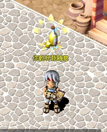 醉人的芬芳釀酒 125 級到金銀城酒館找 NPC 領取
 妙手回春調配 105 級到青鳥城醫院找 NPC 領取
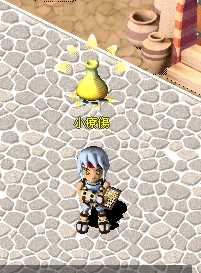 妙手回春調配 125 級到青鳥城醫院找 NPC 領取
御前總舖師烹飪 105 級到彩虹城食品店找 NPC 領取
鍋子裡的至尊烹飪 125 級到彩虹城食品店找 NPC 領取
星空的編織者紡織 105 級到青鳥城紡織店找 NPC 領取
針與線的穿梭者紡織 125 級到青鳥城紡織店找 NPC 領取
千錘百鍊之腕冶煉 105 級到金銀城打鐵鋪找 NPC 領取
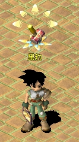 火爐旁的專家冶煉 125 級到金銀城打鐵鋪找 NPC 領取
完美的修飾之手研磨 105 級到金銀城寶石店找 NPC 領取
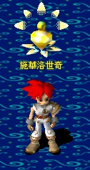 寶石的領導者研磨 125 級到金銀城寶石店找 NPC 領取
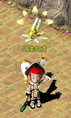 珠寶的藝術家鑲嵌 125 級到金銀城珠寶店找 NPC 領取
巧奪天工之手鑲嵌 105 級到金銀城寶石店找 NPC 領取
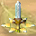 王者之秘劍劍類武器 105 級到彩虹城打鐵鋪找 NPC 領取
凜冽之利刃刀類武器 105 級到彩虹城打鐵鋪找 NPC 領取
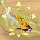 刀刃設計大師刀類武器 125 級到彩虹城打鐵鋪找 NPC 領取
霸氣的製斧者斧類武器 105 級到金銀城打鐵鋪找 NPC 領取
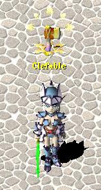 斧類設計大師斧類武器 125 級到金銀城打鐵鋪打找帝瓦多(26,53)
救世之光柱棒類武器 105 級到青鳥城木工店找 NPC 領取
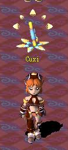 杖類設計大師棒類武器 125 級
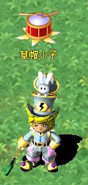
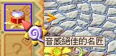 音感絕佳的名匠樂器 105 級到彩虹城旅人公會
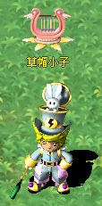
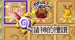 | | | | | | | | | | | | | | | | | | | | | | | | | | | | | | | | | | | | | | | | | | | | | | | | | | | | | | | | | | | | | | | | | | | | | | | | | | | | | | | | | | | | | | | | | | | | | | | | | | | | | | | | | | |